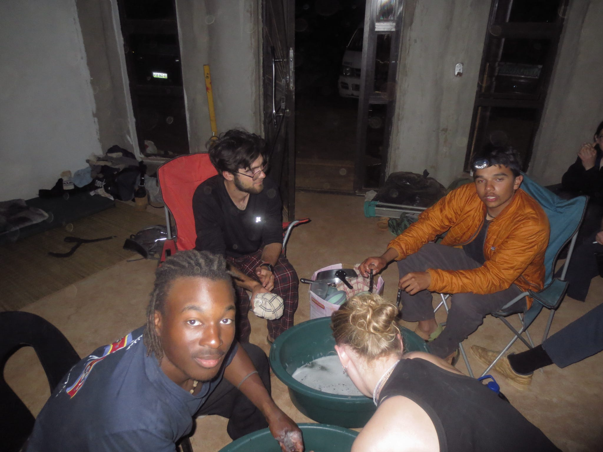
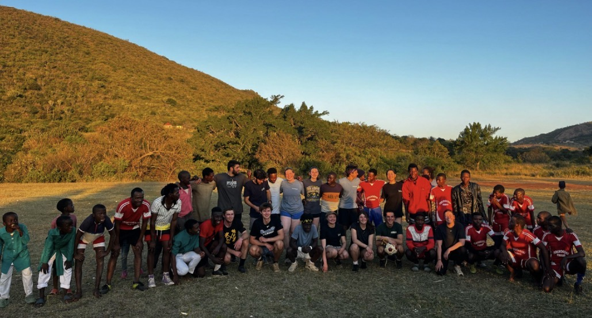
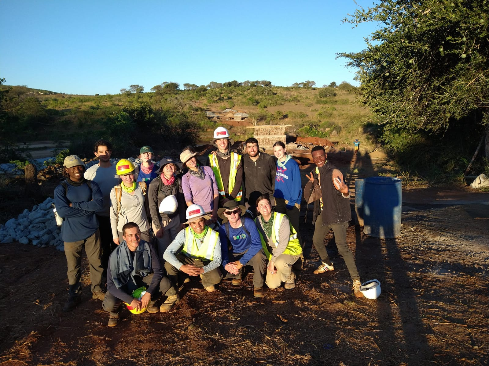

Feature
Yes, we built that! Over the course of nine weeks, I lived and worked in Eswatini alongside 13 Duke classmates, staff from Engineers In Action, local masons and volunteers, and the resilient communities of Emanyonyaneni and Nsizatje (Hosea Inkhundla). Together we built a 128-meter suspended footbridge — the longest pedestrian bridge in Eswatini to date — that now connects more than 3,000 residents to schools, markets, and health clinics across the Ingwavuma River.
One moment I’ll never forget is hearing the story of a local man who, after losing a leg, still carried his children across the river to school and nearly lost his life doing so. When the bridge was finished he shared, with the greatest joy, that he can now cross safely — and so can his children. That moment made the work feel deeply meaningful.
The project was physically and mentally demanding: every rock, nail, bag of cement, and plank was lifted, mixed, and placed by hand. We slept in tents for weeks, adapted to new local foods, and worked long, often exhausting days from sunrise well past sunset — weekdays and weekends alike. Hygiene conditions were basic and resources limited, but those hardships only deepened our appreciation for the community’s hospitality and for the skills we were learning in the field.
As Quality Control Manager, I led inspection checkpoints on critical elements — verifying concrete mix quality and placement, monitoring anchor and cable tensioning, documenting as-built conditions, and maintaining QC forms and test records. I coordinated closely with design and construction leads and with local masons to ensure the bridge was executed carefully and safely.
I can’t say “grateful” enough. It was an honor to serve this community, to learn from them, and to help leave a lasting, life-changing connection across the Ingwavuma River.
Quality control — summary of my QC role, testing, and documentation (click the thumbnails to open each PDF).
My role (brief)
As Quality Control Manager I oversaw inspection checkpoints during construction, verified concrete mix delivery and placement, monitored anchor and cable tensioning, and documented deviations from design. My partner and I coordinated with the Design and Construction Managers, along with the local masons to ensure alignment with the design drawings and maintained QC forms and concrete test records. We had to ensure that all community members were aware of the construction safety criteria during the build every step of the way.


